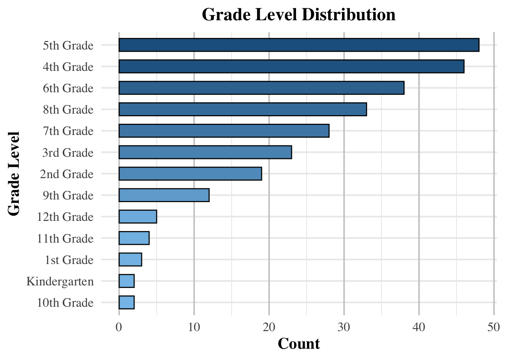

This following post utilized data from a private precision teaching clinic in the United States. Each student in this data has a score for accuracy and fluency of math pinpoints at intake and then their score for those skills on a CBM after 40 hours of instruction.
This report includes: Sample visualizations to understand the sample of participants. Data reshaping to convert the dataset into a tidy format. Analysis for three research questions using clustering, regression, and ANCOVA.
###Research Questions and Methods:###
What math skills, when grouped, predict other skills?
First Hierarchical clustering is used to identify skill groupings based on similar learning patterns.
What math skills predict outcomes on the CBM after 40 hours of instruction?
Next multiple regression modeling is applied to determine predictive relationships.
How do targeted versus untargeted math skills relate to CBM outcomes?
ANCOVA (Analysis of Covariance) is used to examine differences between these skill types.
Before loading the dataset, I cleaned it in a separate script to remove names and replace them with unique ID numbers for student privacy.
In this project, the first step I took was to load all required R packages. For data manipulation (tidyverse), visualizations (ggplot2), clustering analysis (cluster), tidying model outputs (broom), and running regression models (lme4).
library(tidyverse)
── Attaching core tidyverse packages ──────────────────────── tidyverse 2.0.0 ──
✔ dplyr 1.1.4 ✔ readr 2.1.5
✔ forcats 1.0.0 ✔ stringr 1.5.1
✔ ggplot2 3.5.1 ✔ tibble 3.2.1
✔ lubridate 1.9.4 ✔ tidyr 1.3.1
✔ purrr 1.0.4
── Conflicts ────────────────────────────────────────── tidyverse_conflicts() ──
✖ dplyr::filter() masks stats::filter()
✖ dplyr::lag() masks stats::lag()
ℹ Use the conflicted package (<http://conflicted.r-lib.org/>) to force all conflicts to become errors
Loading required package: Matrix
Attaching package: 'Matrix'
The following objects are masked from 'package:tidyr':
expand, pack, unpack
library(dplyr)library(viridis)
Loading required package: viridisLite
Here are the visualizations of the sample participants.
### Students With vs. Without Diagnosisdf %>%mutate(Has_Diagnosis =ifelse(Diagnosis =="None"|is.na(Diagnosis), "No Diagnosis", "Has Diagnosis")) %>%count(Has_Diagnosis) %>%ggplot(aes(x = Has_Diagnosis, y = n, fill = Has_Diagnosis)) +geom_bar(stat ="identity", color ="black", width =0.6) +scale_fill_manual(values =c("#5DADE2", "#34495E")) +# Soft blue & gray for contrastlabs(title ="Students With vs. Without Diagnosis",x ="Diagnosis Status",y ="Count") +theme_minimal(base_size =16) +theme(legend.position ="none", plot.title =element_text(size =18, face ="bold", family ="serif", hjust =0.5), axis.title =element_text(face ="bold", family ="serif"),axis.text =element_text(family ="serif"),panel.grid.major.y =element_line(color ="gray80"))
### Grade Level Distributiondf %>%filter(!is.na(`Grade Level`)) %>%count(`Grade Level`) %>%ggplot(aes(x =reorder(`Grade Level`, n), y = n, fill = n)) +geom_bar(stat ="identity", color ="black", width =0.6) +scale_fill_gradient(low ="#85C1E9", high ="#1F618D") +# Soft-to-dark blue gradientlabs(title ="Grade Level Distribution",x ="Grade Level",y ="Count") +coord_flip() +theme_minimal(base_size =16) +theme(plot.title =element_text(size =18, face ="bold", family ="serif", hjust =0.5),axis.title =element_text(face ="bold", family ="serif"),axis.text =element_text(family ="serif"),legend.position ="none",panel.grid.major.x =element_line(color ="gray80"))

### Diagnosis Type Countdf %>%mutate(Diagnosis_Category =case_when( Diagnosis =="Mood Disorder - Anxiety (e.g. selective mutism, anxiety, GAD)"~"Mood Disorder", Diagnosis =="Learning Disability - Speech and language - Speech delay"~"Learning Disability", Diagnosis =="None"|is.na(Diagnosis) ~"None",TRUE~"Other" )) %>%count(Diagnosis_Category) %>%ggplot(aes(x =reorder(Diagnosis_Category, n), y = n, fill = Diagnosis_Category)) +geom_col(color ="black", width =0.6) +scale_fill_manual(values =c("#AED6F1", "#3498DB", "#2C3E50", "#85929E")) +# Softer blues & graylabs(title ="Diagnosis Type Count",x ="Diagnosis Type",y ="Count") +coord_flip() +theme_minimal(base_size =16) +theme(legend.position ="none",plot.title =element_text(size =18, face ="bold", family ="serif", hjust =0.5),axis.title =element_text(face ="bold", family ="serif"),axis.text =element_text(family ="serif"),panel.grid.major.x =element_line(color ="gray80"))
Reshape Data to Tidy Format
[edit this now that changes were made]I reshaped the dataset to a “tidy” format, where each row represents: Participant_ID, Grade Level, Diagnosis, Skill, Measure` (Intake Accuracy, Post Fluency, etc.), Score. I converted categorical variables to factors to avoid regression errors. And I removed levels with only one category to prevent contrast errors in regression.
# Start with clean data (row 4 onwards)clean_df <- df[4:nrow(df), ]# Step 2: Create proper column names by combining rows 1 and 2col_names_skill <-as.character(unlist(df[1, ]))col_names_assessment <-as.character(unlist(df[2, ]))# Fix any NA or empty values in column namescol_names_skill <-ifelse(is.na(col_names_skill) | col_names_skill =="", paste0("Column_", 1:length(col_names_skill)), col_names_skill)col_names_assessment <-ifelse(is.na(col_names_assessment) | col_names_assessment =="", "Unknown", col_names_assessment)# Create combined names for all columnsfull_col_names <-vector("character", length(col_names_skill))for(i in1:length(col_names_skill)) {if(i <=3) {# Keep the original names for the first three columns full_col_names[i] <- col_names_skill[i] } else {# Combine skill and assessment type for data columns full_col_names[i] <-paste(col_names_skill[i], col_names_assessment[i], sep ="_") }}# Make sure all column names are uniqueif(any(duplicated(full_col_names))) {# Add a suffix to duplicated names dups <-which(duplicated(full_col_names))for(i in dups) { full_col_names[i] <-paste0(full_col_names[i], "_", i) }}# Assign the new column namescolnames(clean_df) <- full_col_names# Step 3: Convert to tidy formattidy_df <- clean_df %>%# Convert character columns to numeric (except first 3 columns)mutate(across(4:ncol(.), ~as.numeric(as.character(.)))) %>%# Convert to long formatpivot_longer(cols =4:ncol(.),names_to ="Skill_Measure",values_to ="Score" ) %>%# Split Skill_Measure into Skill and Measure# Use a more flexible pattern to handle different formatsseparate(Skill_Measure, into =c("Skill", "Measure"),sep ="_(?=(Intake|Post|Targeted)($|_))", # Split before Intake, Post, or Targetedfill ="right") %>%# Handle any missing values# Remove any trailing/leading whitespacemutate(Skill =trimws(Skill),Measure =trimws(Measure) )
Warning: There were 5 warnings in `mutate()`.
The first warning was:
ℹ In argument: `across(4:ncol(.), ~as.numeric(as.character(.)))`.
Caused by warning:
! NAs introduced by coercion
ℹ Run `dplyr::last_dplyr_warnings()` to see the 4 remaining warnings.
# Check the number of NAs in the Score columnna_count <-sum(is.na(tidy_df$Score))total_count <-nrow(tidy_df)na_percentage <- (na_count / total_count) *100# Print summarycat("Total rows:", total_count, "\n")
Total rows: 124200
cat("NA values in Score:", na_count, "\n")
NA values in Score: 47403
cat("Percentage NA:", na_percentage, "%\n")
Percentage NA: 38.16667 %
# See what the tidy data looks likehead(tidy_df)
# A tibble: 6 × 6
Column_1 Column_2 Column_3 Skill Measure Score
<dbl> <chr> <chr> <chr> <chr> <dbl>
1 3 None 2nd Grade Skip Count by 10 Forwards to 1,000 … <NA> 84
2 3 None 2nd Grade Skip Count by 10 Forwards to 1,000 … <NA> 100
3 3 None 2nd Grade Skip Count by 10 Forwards to 1,000 … <NA> 92
4 3 None 2nd Grade Skip Count by 10 Forwards to 1,000 … <NA> 100
5 3 None 2nd Grade Skip Count by 10 Forwards to 1,000 … <NA> 0
6 3 None 2nd Grade Skip Count by 10 Backwards From 1,0… <NA> NA
////// ## Answer Research Questions
Q1: What math skills, when grouped, predict other skills?
to address this I used a Correlation analysis to identify skills that improve together. Then I did Association rule mining to find patterns where mastering one skill predicts mastery of another. I then created the following visualizations: a correlation heatmap and association rule graph.
# Create a correlation matrix for skill scores# Visualize correlation matrix